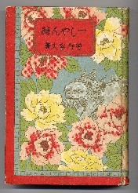

昭和６年５月に文雅堂という会社から出版された。一向聴を分析した戦理書で、厚さ３センチもある。しかし一向聴型ともなると、そのパターンはたぶん天文学的数字。それをすべて分類・分析するのは、パソコンを使ってもムリかも。それが手作業での分類となると、完璧にはほど遠いかも知れない。しかし問題は、そんなところにはない。
大正中期、麻雀は日本に伝来した。そして昭和初期には大ブームとなり、多くの戦術書、戦理書が出版された。その数、約150冊。戦前書リスト
1860年頃、中国で麻雀が成立した。1930年（昭和５年）までの70年の間に、中国でもそれなりの戦術書・戦理書が出版された。しかし量的にも質的にも、日本とはレベルが違う。一言で言えば月とスッポン。あ、もちろん日本が月。(^-^；
中国に、このような詳細な戦理書は存在しない。そして日本における技法、戦理、ルールの研究により、麻雀はより知的ゲームとして進化した。すなわち“麻雀は中国で生まれ、日本が育てた”といっても過言ではない。この「一しゃん聴」は、それを如実にあらわすエポックメーキングな書物である。
しかし一般受けしない本なので発行部数も少なく、いまとなっては入手はきわめて難かしい。古書店でも、むかしは高くても５千円くらいの値をつけていたが、いまでは１万円くらいは平気で云う。(-_-；
先日、ある会議のため、急遽、麻雀博物館へ行った。会議の合間に副館長の鈴木さんと雑談したおり、「浅見さんが値段をつり上げた」、「いや、鈴木さんこそ」と罪のなすり愛をした。(笑)
|